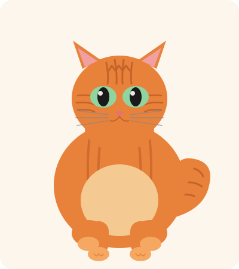

Discover the beauty, personality, and charm of the world's most iconic striped feline.
Explore NowA tabby cat is not a breed — it's a coat pattern. The distinctive "M" marking on the forehead and striped, swirled, or spotted patterns appear in dozens of cat breeds as well as in mixed-breed cats around the world.
The word "tabby" is believed to derive from Atabi, a type of striped silk taffeta historically made in the Attabiy district of Baghdad. The pattern was later compared to the coats of these beloved cats.
Tabbies are among the most common cats on the planet, yet every single one has a completely unique pattern — like a fingerprint.
Four distinct patterns define the tabby family — each stunning in its own way.
Bold, swirling marble-like patterns on the sides. Often called the "blotched" tabby, this pattern features large whorls that resemble a bullseye target.
Thin, parallel stripes running vertically down the body — resembling a fish skeleton. This is the most common tabby pattern and closest to wild cat markings.
Spots of varying sizes scattered across the coat. The spots may be round, oval, or rosette-shaped and are thought to be a modified mackerel pattern.
No visible stripes on the body — instead each individual hair is banded with multiple colors. The Abyssinian is the most well-known ticked tabby breed.
Tabbies thrive with the right love, nutrition, and enrichment.
Feed a balanced diet of high-quality wet and dry food. Tabbies can be prone to obesity — measure portions and limit treats to under 10% of daily calories.
Short-haired tabbies need brushing once a week; longer-coated tabbies may need daily brushing. Regular nail trims and ear checks keep them comfortable.
Tabbies are intelligent and curious. Provide scratching posts, window perches, interactive toys, and daily play sessions to keep their minds sharp.
Annual vet visits, vaccinations, and parasite prevention are essential. Spaying or neutering your tabby promotes a longer, healthier life.
Cats naturally have a low thirst drive. Offer a water fountain or wet food to encourage adequate hydration and support kidney health.
Tabbies are famously social and affectionate. Spend quality time with your cat daily — they bond deeply with their humans and thrive on companionship.
Every tabby has a distinctive "M" shape on its forehead. Legend says the Virgin Mary blessed a tabby that comforted the baby Jesus — tracing an "M" for Mary on its forehead.
The orange tabby is predominantly male — roughly 80% of orange tabbies are male due to the genetics of the X chromosome that carries the orange gene.
Tabby cats appear in the artwork of ancient Egypt — the spotted and striped patterns were revered and often depicted alongside the goddess Bastet.
Winston Churchill owned a beloved orange tabby named Jock. His fondness for tabbies was so great that a tabby cat has lived at Chartwell (his former home) ever since.
The tabby pattern exists because of the agouti gene. When this gene is active, it produces the alternating dark and light banding that creates the iconic stripes and whorls.
Tabbies are highly adaptable — they are found on every continent except Antarctica and have been the most successful domesticated cat coat pattern throughout history.
Tabbies come in a stunning range of colors — the pattern stays, but the palette varies widely.
The most iconic tabby color. Bold orange stripes on a cream background — think of the famous cartoon cat Garfield.
Rich brown or black stripes on a warm tan background. The most common tabby coloring found in domestic cats.
Cool silver or grey stripes on a pale background. Often described as "blue tabby" in cat fancy terminology.
Soft, subtle stripes in a muted cream or buff palette. A diluted version of the orange tabby coloring.